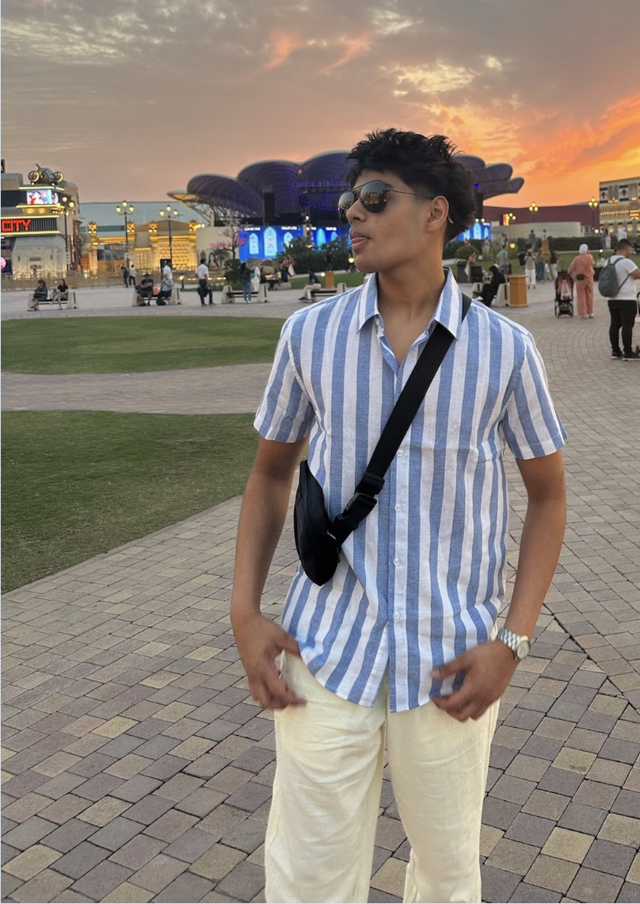
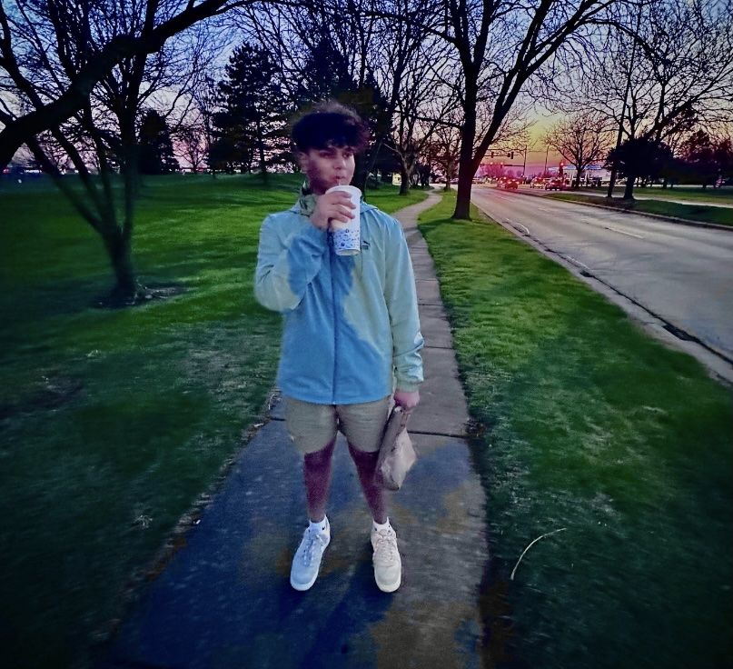
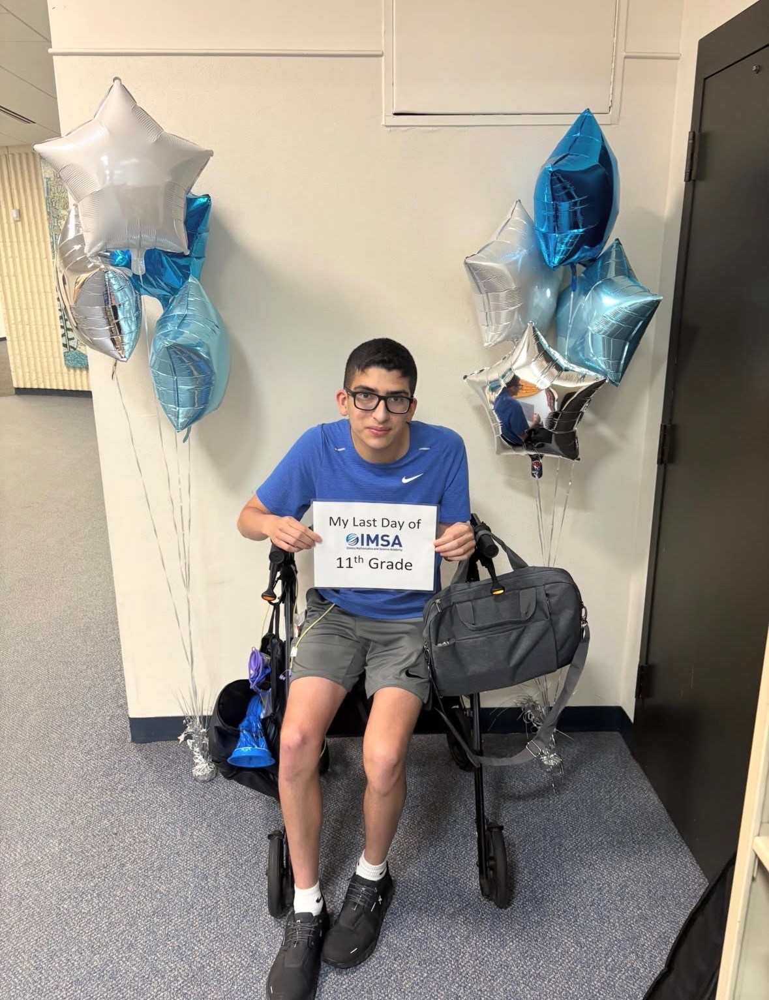

Driven by purpose,
united for impact.
We are a group of students who believe actionable awareness shouldn't wait because for most cancers, timing is everything.
AURA Awareness was formed out of a simple realization: while medical advancements continue to progress, accessible community fundraising can shift survival numbers right now.
By channeling resources directly into established organizations like the American Cancer Society, we keep our operations transparent, lean, and focused on one objective: empowering lives through early detection.
The people keeping the
pulse alive
Students from IMSA, UW-Madison, Case Western, and Georgia Tech. We are united by one mission.
An incoming freshman at UW-Madison and IMSA alumnus, Raj aims to become a physician at the intersection of neuroscience and computer science. Research at Northwestern and UIC gave him hands-on experience in the lab and a deep understanding of how disease impacts real people. This drove him to co-found AURA.

Incoming freshman at Case Western and IMSA alumnus. Aydin's mother and aunt both survived breast cancer thanks to early detection. That personal experience is what sparked AURA. He previously raised $1,500 for pediatric cancer research as a kid, and he's not done yet.

Rising senior at IMSA pursuing neurosurgery and a PhD. Krish co-developed a project achieving 98.2% accuracy in diagnosing brain tumors from MRI scans. His research in oncology and neurology fuels his commitment to equitable access to early detection for underserved communities.

I'm Maximiliano Ballesteros, the artist behind the art prints. I am a senior at Illinois Math and Science Academy. I have been drawing ever since I lost my ability to eat, which has motivated me to help raise money for cancer patients. Because of people's kindness, I realize that this is my way of returning that favor.